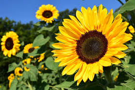

Plantas ou vegetais são organismos vivos que se destacam por serem multicelulares, eucariontes, e que realizam fotossíntese em sua grande maioria, este processo garante a produção de seu próprio alimento transformando a energia luminosa do sol em energia química. Elas são fundamentais para a vida na Terra, pois geram oxigênio, alimentos, fibras, combustíveis e remédios.
Quando observamos as plantas do reino Plantae, notamos que ele é composto por organismos bastante diferente. Algumas plantas, por exemplo, apresentam tamanho de poucos centímetros, enquanto outras podem apresentar metros, além das sua diferenças em tamanho, esse seres podem apresentar certas elementos como: presença de condutores, presença de flores e outras características.
Apesar de existirem organismos tão diferentes dentro do mesmo grupo, todas as plantas apresentam algumas características básicas que permitem classificá-las dessa forma, como:
De forma básica podemos dizer que as principais partes de uma planta são: a raiz, o caule, e as folhas.